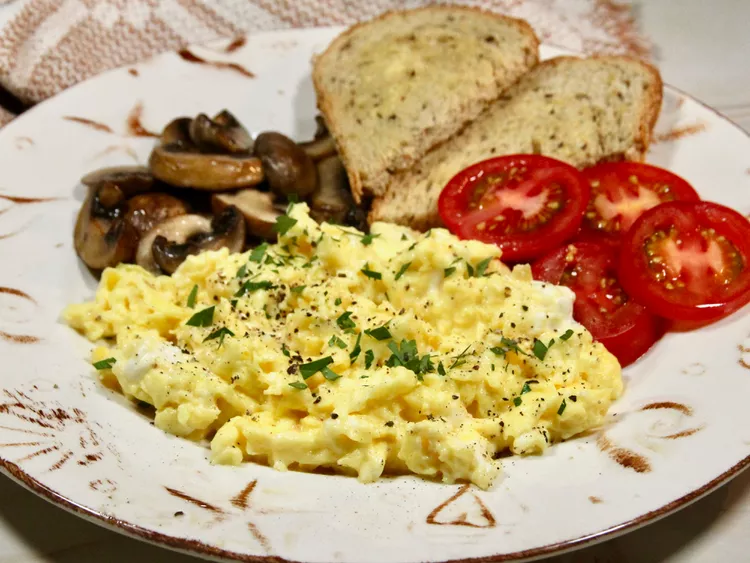

Boursin Scrambled Eggs

Description
These creamy scrambled eggs are elevated with the addition of Boursin cheese, making for a rich and flavorful breakfast.
Ingredients
- 2 large eggs
- 1 tablespoon Boursin cheese
- Salt and pepper to taste
- 1 teaspoon butter
Steps
- Crack the eggs into a bowl and whisk them until well combined.
- Add the Boursin cheese, salt, and pepper to the eggs and mix well.
- Heat a non-stick skillet over medium heat and add the butter.
- Once the butter is melted, pour in the egg mixture.
- Gently stir the eggs with a spatula until they are softly scrambled and creamy.
- Remove from heat and serve immediately.
Home